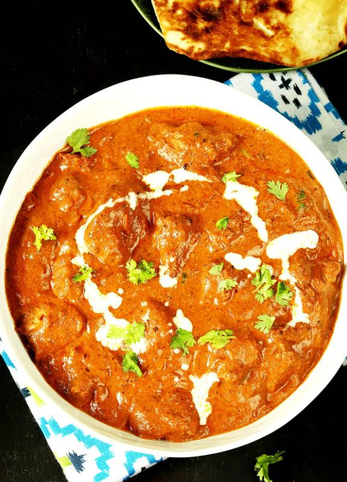

Double Chocolate Cookies
Origin: Michigan Source: Family Recipe Category: Dessert
My daughter learned to make these cookies at a baking camp at Zingermanns and has tweaked the recipe to fit the taste buds of her siblings. They are extremely sugary so the salt helps to balance it. Note, these cookies are best eaten very quickly.
Recipe Ingredients
- Unsalted butter
- Granulated Sugar
- Packed light or dark brown sugar
- Large egg
- Pure vanilla extract
- Semi-sweet chocolate chunks (melted)
- All-purpose flour
- Natural unsweetened cocoa powder
- Baking soda
- Salt
- Semi-sweet chocolate chunks
Recipe Steps
- In a mixing bowl cream together the butter, granulated sugar, and brown sugar
- Add the egg and vanilla extract and beat well
- Add the melted chocolate
- In a separate bowl combine the flour, baking soda, cocoa powder and salt
- Combine the wet and dry ingredients
- Add the unmelted chocolate chunks.
- Form 15 cookies and place on a baking sheet.
- Cook for 12 to 13 minutes at 350 degrees.
Additional Food images


Homemade Chicken Tikka Masala Recipe
Origin: India Source: https://tasty.co/recipe/homemade-chicken-tikka-masala Category: Main Dish Chicken Tikka Masala is a delicious dish to have for dinner. I had it for dinner last night! It has a nice mixture of savory and sweet flavors, and is best served with Naan and rice and vegetables.
Recipe Ingredients
- 3 boneless, skinless chicken breasts
- ½ cup plain yogurt
- 2 tablespoons lemon juice
- 6 cloves garlic, minced
- 1 tablespoon minced ginger
- 2 teaspoons salt
- 2 teaspoons ground cumin
- 2 teaspoons garam masala
- 2 teaspoons paprika
- 3 tablespoons oil
- 1 large onion, finely chopped
- 2 tablespoons minced ginger
- 8 cloves garlic, minced
- 2 teaspoons ground cumin
- 2 teaspoons ground turmeric
- 2 teaspoons ground coriander
- 2 teaspoons paprika
- 2 teaspoons chili powder
- 2 teaspoons garam masala
- 1 tablespoon tomato puree
- 3 ½ cups tomato sauce
- 1 ¼ cups water
- 1 cup heavy cream
- ¼ cup fresh cilantro, for garnish
- cooked rice, for serving
- naan bread, for serving
Recipe Steps
- Slice the chicken into bite-sized chunks. Combine the cubed chicken with the yogurt, lemon juice, garlic, ginger, salt, cumin, garam masala, and paprika and stir until well-coated.
- Cover and refrigerate for at least 1 hour, or overnight.
- Preheat the oven to 500°F (260°C). Line a high-sided baking pan or roasting tray with parchment paper.
- Place the marinated chicken pieces on bamboo or wooden skewers, then set them over the prepared baking pan, making sure there is space underneath the chicken to help distribute the heat more evenly. Bake for about 15 minutes, until slightly dark brown on the edges.
- Make the sauce: Heat the oil in a large pot over medium heat, then sauté the onions, ginger, and garlic until tender but not browned. Add the cumin, turmeric, coriander, paprika, chili powder, and garam masala and stir constantly for about 30 seconds, until the spices are fragrant. Stir in the tomato puree, tomato sauce, and 1 ¼ cups of water, then bring to a boil and cook for about 5 minutes. Pour in the cream.
- Remove the chicken from the skewers and add to the sauce, cooking for another 1-2 minutes. Garnish with cilantro and serve over rice or alongside naan bread.
- Enjoy!
Additional Food images


Dead Simple Fried Rice
Origin: American/East Asian Source: Self Category: Main Dish
This Dead Simple Fried Rice recipe is an incredibly modular and tasty dish. At its core, it's just rice, vegetables, protein, and oil. As such, the dish can be modified to serve as many or as few people as needed with a wide variety of food preferences. Experimentation with what specific ingredients you enjoy the most will unlock the full potential of this dish.
Recipe Ingredients
- Long-grain white rice
- Frozen Vegetables
- Eggs
- (optional) Milk
- Oil of Choice
- Salt
- Soy Sauce
- (optional) Curry Sauce/Paste, Spicy Teriyaki Sauce, and Sweet Chili Sauce are great options
- (optional) Nuts, sausage, tofu, and bacon are great options
- (optional) Green onions, celery, and vidalia onions add great texture and flavor to the dish.
Recipe Steps
- In a rice cooker, add half a cup of rice, a cup of water, a touch of oil, and a pinch of salt. Cook the rice. Tip: if there are tough frozen veggies, such as broccoli, you might want to add the frozen veggies to the integrated steamer basket.
- On high medium heat on your stovetop, in a frying pan, add your chosen oil. Add some milk if desired. Then, scramble the eggs.
- Before the eggs are fully done, add the frozen vegetables. Add fresh vegetables when required so they are fully cooked by the end.
- (Optional) Add the additional protein when required so they are fully cooked by the end.
- Once the rice is done, add it to the pan. Poor your desired amount of Soy Sauce. Stir well.
- (Optional) After that, add your desired amount of additional sauce. Stir well.
- Let the fried rice cook until it is no longer visibly oily and the dish is nice and hot, with the vegetables fully cooked.
- Plate the fried rice. Enjoy!
Additional Food images